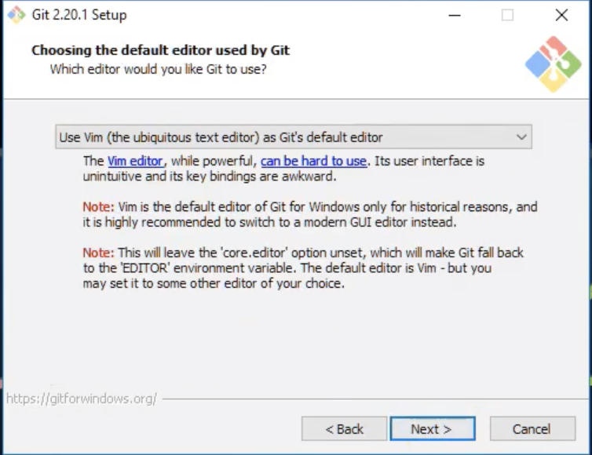

在 Window 作業系統上安裝 Git
查看作業系統版本

下載安裝檔
https://git-scm.com/download/win

安裝步驟
版權宣告

想安裝的 Components

選擇安裝路徑
選擇預設的編輯器

調整你的 PATH 環境變數

選擇模組
換行設定
第一項如果勾選的話會在 checkout ( 切換 commit ) 的時候，自動將斷行符號由 LF ( linux ) 轉成 CRLF ( windows )，如果是在 linux 的系統上安裝則相反，選擇這個的好處是在進行協同開發的時候如果使用的系統不相同，就比較不會因為斷行符號的不同而發生錯誤。第二項則是預先設置一個通用的 ignore，這兩項可以依照自己的需求選擇。

額外的設定

安裝完成